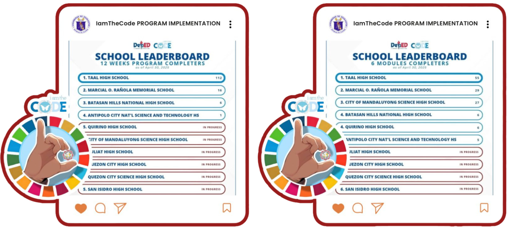

News
Taal High School Leads in iamtheCODE Program Implementation

Buong puso at taas-noong ipinagmamalaki ng Taal High School ang natatanging tagumpay nito sa
pagpapatupad ng 𝑰𝒂𝒎𝑻𝒉𝒆𝑪𝒐𝒅𝒆 𝑷𝒓𝒐𝒈𝒓𝒂𝒎 ng Kagawaran ng Edukasyon, matapos nitong
makamit ang Rank 1 sa dalawang kategorya noong Abril 30, 2025, 𝐑𝐚𝐧𝐤 𝟏 𝐬𝐚 𝟏𝟐 𝐖𝐞𝐞𝐤𝐬
𝐏𝐫𝐨𝐠𝐫𝐚𝐦 𝐂𝐨𝐦𝐩𝐥𝐞𝐭𝐞𝐫𝐬 at 𝐑𝐚𝐧𝐤 𝟏 𝐬𝐚 𝟔 𝐌𝐨𝐝𝐮𝐥𝐞𝐬 𝐂𝐨𝐦𝐩𝐥𝐞𝐭𝐞𝐫𝐬. Ito
ay malinaw na patunay ng matatag na paninindigan ng paaralan sa pagsusulong ng digital literacy at
inklusibong edukasyon para sa mga mag-aaral.
Ang tagumpay na ito ay bunga ng matibay na pamumuno ni Ginoong Neri L. Dizon, Punongguro IV ng Taal
High School, kasama ang masisigasig na mga Head Teachers, partikular na sina Ginoong Ronald Llanita
at Ginang Virginia Cordero, na katuwang ng iba pang pinunong guro sa matagumpay at maayos na
implementasyon ng programa. Lubos din ang pasasalamat ng paaralan sa mga ICT Project
Teacher-Facilitators na buong dedikasyon, galing, at malasakit ang ipinamalas sa paggabay at
pagtuturo sa mga mag-aaral. Kabilang sa kanila sina Rosemarie N. Mendoza, Senecio Acibar Jr.,
Aprilaine Q. Cristobal, Kristine S. Gonzales, Zernan P. Temporal, at Maricar V. Silva.
Hindi rin magiging ganap ang tagumpay na ito kung wala ang masiglang suporta ng Schools Division
Office of Bulacan sa pamumuno nina Dr. Joel Vasallo (OIC, Division ICT), Sir Bryan Amiel De Jesus
(Social Mobilization and Networking), Dr. Cecil Custodio (CID Chief), at Dr. Norma P. Esteban (CESO
V). Kinikilala rin ng paaralan ang naging mahalagang kontribusyon ni Sir Richard Biglete, dating
Division ICT, na naging bahagi ng mga naunang inisyatiba tungo sa pagsulong ng ICT education sa
lalawigan.
Sa pagtutulungan ng buong pamayanang pang-edukasyon, patuloy na pinangungunahan ng Taal High School
ang pagtataguyod ng makabago at makabuluhang edukasyon sa larangan ng teknolohiya, isang huwaran
para sa mga paaralan sa buong rehiyon
© 2025 Taal High School | iamtheCODE journey
All rights reserved.